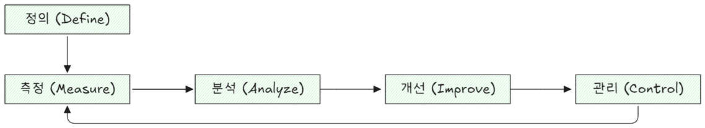
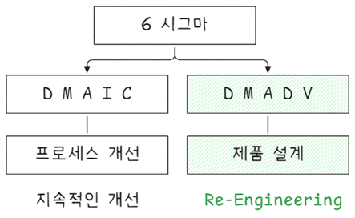

생산혁신기술
생산혁신기술, 칸반, 간판, JIT, TOC, Lean, 6시그마, TRIZ
칸판 생산방식

칸판(Kanban, 또는 간판으로 읽음)생산 방식은 “필요한 것은 필요한 때에 필요한 만큼만”이라는 JIT(Just In Time) 사상을 실현하기 위해 도요타에서 창안 되었다. JIT 생산시스템에 있어 정보 시스템 역할을 한다. 즉 어떤 제품이나 부품이 언제 얼마나 필요한가를 알려주는 기능이다.
간판 기능을 통해 얻을 수 있는 이점은 다음과 같다.
- 재고 최소화
불필요한 재고를 줄여 자원 낭비를 방지하고 재고 회전율을 높일 수 있다. - 효율적인 생산 관리
각 공정에서 필요한 자재나 부품이 정확한 양만큼 제때에 공급되어 생산 효율성을 극대화활 수 있다. - 유연한 생산
수요 변화에 맞춰 생산량을 조절할 수 있어, 변동성이 큰 시장 환경에 빠르게 대응할 수 있다.
칸판 역할
칸판은 엽서 크기의 카드나 전표로 작업 지시표 내지 이동표 역할을 한다.
- 재고 관리 및 생산 조정
- 필요한 물품 수량과 재고 수준을 실시간으로 파악하여 재고가 부족하지 않도록 저정하는 역할
- 부품이나 자재가 필요할 때 즉각적으로 다음 단계 생산 라인에 재료를 요청하는 신호 역할을 하며, 생산이 지연되지 않도록 함
- 과인생산이나 재고광잉을 방지하고 JIT원칙에 맞게 생산이 이루어지도록 함
- 생산 흐름 원활한 제어
- 생산 라인 상에서 부품이나 제품이 이동하는 경로를 제어하며, 각 공정에서 필요한 부품을 적시에 공급하도록 함
- 생산 라인 각 공정은 정해진 양만큼 자재를 일정한 주기로 받게 되어 과도한 자재가 쌓이지 않으며 생산 흐름이 원활하게 이루어짐
- 공정 간 혼잡이나 지연을 방지
- 통신 및 신호 역할
- 생산과 물류 간 소통을 돕는 중용한 신호로 작용
- 각 작업자나 생산 라인에서는 간판을 통해 부품 요청이 필요할 때 이를 다른 공정이나 공급자에게 전달
- 정보 전달이 지체되지 않고 실시간으로 이루어져 적시적소에 필요한 부품이 공급될 수 있음
- 불필요한 정보 전달 지연이나 오류를 줄일 수 있음
칸판 종류
칸판 종류는 크게 생산지시 칸반과 인수 칸반이 있으며 구체적으로 다음과 같다.
- 생산지시 칸판
- 작업지시표 역할, 생산부문에 대한 생산지시용
- 인수(이동) 칸판
- 현품표와 이동표 기능으로 뒷 공정이 앞공정으로부터 물품을 인수할 때 사용
- 임시 칸판
- 임시 생산 경우에 사용
- 전자 칸판
- 운반 기간이 3~4일 이상 걸리는 경우
- 기타
- 칸판 역할을 수향할 수 있는 신호
- 용기 시스템: 전용 용기를 칸판으로 사용
- 무용기 시스템: 맥도널드 주문 접수원 금전 등록기에 입력한 정보가 주방으로 전달(칸판 역할)
칸판 용기 수 산정
칸반 시스템에서 용기 수량을 계산하는 식은 다음과 같다.
\[ \text{용기 수량} = \frac{\text{수요량} \times \text{리드 타임} + \text{안전 재고}}{\text{용기당 수량}} \tag{33.1}\]
- 여기서
-
- 수요량: 제품 또는 부품의 일일 수요량
- 리드 타임: 부품이 주문되어서 생산 또는 배송되는 데 걸리는 시간 (일)
- 안전 재고: 불확실성을 대비하여 보유해야 하는 추가 재고
- 용기당 수량: 하나의 Kanban 용기에 담을 수 있는 수량
이 식을 통해, 실제 생산 및 공급의 흐름에 맞춰 필요한 용기 수량을 계산할 수 있다.
칸판 운영 규칙
칸판 운영 규칙은 다음과 같다.
- 모든 컨테이너 부품에 칸판을 부착한다.
- 뒷 공정에서 앞공정으로 가지러 간다(필요 시 필요한 양만 생산하고 인수해 가도록 함).
- 앞 공정은 뒷 공정에서 가져간 만큼만 생산한다(공정품 재고를 최소로 하기 위함).
- 불량품을 뒷 공정에 보내지 않는다(불량으로 인한 솔실을 막고 칸판 흐름 보증).
- 생산을 평준화 한다.
- 칸판은 세부적인 조정이 가능하다(수요 변화 내지 생산현장 사정에 적응하는 능력 갖춤).
- 공정을 안정화하고 합리화 한다(생산 안정성 유지와 낭비 제거).
칸반 운영 조건
칸반방식을 운영하기 위한 조건은 다음과 같다.
- 자동화와 생산평준화
- 소로트화
- U자형 설비배치와 다기능공 육성
- 작업 표준화
JIT Ⅱ
JIT II(Just-In-Time II)는 전통적인 JIT 시스템을 확장한 개념으로, 공급업체의 직원(VMI - Vendor Managed Inventory 책임자 등)을 구매기업 내부에 상주시키고, 공급자와 수요자 간의 긴밀한 협업 체계를 통해 재고를 최소화하고 자재 흐름을 최적화하는 방식이다.
최초 도입: Bose Corporation (1980년대)
목적: 공급사와의 경계를 허물고, 공급사로 하여금 고객사의 자재 흐름을 직접 관리하게 함
JIT와 JIT II의 비교하면 다음과 같다.
| 항목 | JIT | JIT II |
|---|---|---|
| 개념 | 생산에 필요한 물자를 필요한 시점에 필요한 만큼 공급 | 공급사 직원이 고객사에 상주하여 직접 자재·재고를 관리 |
| 역할 주체 | 고객사 중심 (구매자가 자재 주문 및 관리) | 공급사 중심 (공급자 담당자가 실질적 재고/자재 담당) |
| 정보 공유 | 제한적 | 실시간, 전면적 정보 공유 |
| 관계 성격 | 거래 중심 | 협업 파트너십 중심 |
| 이점 | 재고 축소, 리드타임 단축 | 공급사 책임 강화, 구매 효율성 향상, 재고 거의 ‘0’ 수준 실현 |
JIT II의 핵심 요소는 다음과 같다.
| 요소 | 설명 |
|---|---|
| OSR | 고객사 내부에 상주하는 공급사 직원으로, 재고/자재 발주/공급 계획을 직접 관리 |
| 정보통합 (IT 통합) | 고객사의 생산 계획, 사용량, 재고 현황 등을 공급사가 실시간으로 공유 |
| 파트너십 기반 계약 | 장기 계약, 협업 기반, 공급업체의 전략적 파트너화 |
| 공동 목표 설정 | 비용 절감, 품질 향상, 리드타임 단축, 재고 최소화를 공급사와 공동으로 추구 |
OSR: On-site Supplier Representative
JIT II의 도입 시 다음과 같은 효과를 기대할 수 있다.
| 항목 | 효과 |
|---|---|
| 재고 감소 | 공급사가 실시간으로 재고 관리 → 과잉 재고 최소화 |
| 구매 효율성 향상 | 고객사 구매부서의 업무 경감 |
| 리드타임 단축 | 공급사와의 조율 속도 향상으로 자재 납기 신속화 |
| 협업 품질 향상 | 품질 개선 활동을 공급사와 공동 수행 가능 |
| 책임소재 명확화 | 공급사 OSR이 재고 및 납기 책임을 명확히 가짐 |
JIT II 도입 조건 및 유의사항은 다음과 같다.
| 조건 | 설명 |
|---|---|
| 신뢰 관계 | 공급사와 고객사 간 신뢰가 전제되어야 함 |
| 정보 시스템 통합 | ERP, SCM 등 시스템 간의 원활한 연결 및 데이터 공유 필요 |
| 공급사 역량 | 공급사가 고객사의 수요예측, 생산계획을 분석할 수 있는 능력 보유 필요 |
| 정책적 지원 | 장기계약, 보안관리, OSR 운영에 대한 명확한 정책 필요 |
기업별 JIT II 적용 사례이다.
| 기업 | 특징 |
|---|---|
| BOSE | 최초 JIT II 도입. 공급사 직원을 상주시켜 구매 및 자재관리 일임 |
| DELL | 주요 부품 공급업체들이 생산라인 인근에서 부품 공급 및 품질 관리 |
| TOYOTA | 협력업체와의 동기화된 생산 체계를 통해 JIT II 유사 모델 운영 |
TOC
TOC는 Theory of Constraints 약자로 시스템이 목표를 달성하는데 가장 방해가 되는 요소인 제약(constraint)을 효율적으로 관리하는 방법이다1.
- 능력제약(capacity constraint)
시스템이 요구하는 적시에 능력을 제공할 수 없는 자원 - 시장제약(market constraint)
고객 주문량이 시스템 성장에 필요할 정도로 충분하지 않은 상태 - 시간제약(time constraint)
시장 요구에 시스템 대응 시간이 너무 길어서 고객과 현재 약속을 충족하는 시스템 능려과 새로운 비지니스 성공 능력이 위태로워지는 상태
TOC 개념
TOC는 한 단어 로압축하면 초점(focus)이다. 초점이란 “해야 할 것을 하는 것”이라고 단순하게 정의할 수 있다. 파레토는 20% 요소가 결과의 80%에 기여한다는 것을 증명했다. 모든 것을 할 수 없을 때 할 것을 적절하게 선택하는 것이 중요하다. 즉 무엇을 선택해 초점을 맞추느냐가 극히 중요하다.
파레토 20-80법칙은 시스템 간 요소 상호의존성(independency)이 없을 때 적용된다. 상호의존성이 많을수록 그리고 변동성(variablity)이 클 수록 상황은 더 극단적이 된다. 조직에서는 수많은 상호의존성과 비교적 큰 변동성이 있어 시스템 성과를 결정하는 요수 수, 즉 제약 수는 극히 적다. TOC에서는 0.1% 요소가 결과의 99.9%를 결정한다고 할 수 있다.
0.1% 제약을 선택해서 초점을 맞추는 것이 TOC 개념이다. 초점이란 말을 좀 더 구체적으로 정의한다면 해야할 것을 하며 또한 하지 않아야 할 것을 하지 않는다는 것이다(Eliyahu M. Goldratt).
TOC에서 문제해결 도구는 흐름, 변화, 측정으로 분류할 수 있다.
- 흐름(Flow)
- DBR(Drum-Buffer-Rope)
- CPM(Critical Cahin Project Management)
- MTA(Make-to-Availability)
- 변화(Change)
- 집중개선 5단계
- 사고 프로세스(Thinking Process)
- TOC for Education
- Strategic & Tactic Tree
- 측정(Measure)
- 스루풋 회계(Throughput accounting)
5 Focusing Step
먼저 목표를 설정하고 목표 달성을 판단할 수 이는 적합한 성과평가방법을 결정한다.

집중개선 5단계 수행 순서는 다음과 같다.
- 시스템 제악을 찾는다.
- 투자없이 제약을 최대한 활용할 방법을 결정한다.
- 제약을 활용할 방법에 따라 나머지 비제약을 모두 제약 속도에 맞춘다.
- 제약 능력을 확장한다.
- 타성에 젖지 말고 1단계로 돌아간다.
DBR

DBR(Drum-Buffer-Rope)는 TOC(Theory of Constraints)의 실행 기법 중 하나로, 제약자원 중심의 생산 계획 및 통제 방식을 의미한다. 전체 시스템의 흐름을 제약 자원의 처리 능력에 맞추어 동기화함으로써, 병목을 효율적으로 관리하고 스루풋(Throughput)을 극대화하는 것이 목적이다.
DBR 구성 요소는 다음과 같다.
| 구성 요소 | 설명 |
|---|---|
| Drum (드럼) | 제약자원이 생산 속도를 결정하는 기준(리듬) 역할을 한다. 전체 공정의 흐름은 이 기준에 맞춰 계획된다. |
| Buffer (버퍼) | 제약자원의 가동 중단 방지를 위해 앞 공정에 설정된 시간 또는 재고 완충지대. 자재 부족으로 인한 병목 정지를 방지한다. |
| Rope (로프) | 생산 시작 타이밍을 제약의 처리 속도에 맞춰 조정하는 통제 메커니즘. 자재 투입을 너무 빠르게 하지 않도록 통제한다. |
- Drum: 제약 공정의 일정
- Buffer: 자재 흐름 완충 (주로 제약 앞단에 설치)
- Rope: 제약에 맞춘 자재 투입 타이밍 조정 신호
DBR 적용 원리를 정리하면 다음과 같다.
- 제약 식별: 시스템 내 병목(Constraint)을 찾아낸다.
- 제약 기준 일정 수립 (Drum): 전체 생산 일정을 제약 공정 기준으로 설정한다.
- 버퍼 설정 (Buffer): 제약 앞 단계에 재고 또는 시간 여유를 확보하여 중단 방지.
- 로프 설정 (Rope): 버퍼 상황과 제약 일정에 맞추어 전 공정의 투입을 통제.
- 지속적 모니터링 및 개선: 제약 공정의 가동률과 전체 흐름을 지속적으로 감시하고 개선한다.
DBR의 주요 목적은 다음과 같다.
| 목적 | 설명 |
|---|---|
| 제약자원의 효율 극대화 | 병목 공정이 멈추지 않도록 자재 공급을 안정화함 |
| 재공재고 최소화 | 로프를 통해 투입 시점을 통제하여 과잉 투입 방지 |
| 리드타임 단축 | 흐름 중심의 운영으로 납기 준수율 향상 |
| 흐름 최적화 | 전체 생산 속도를 제약 기준으로 동기화하여 흐름 혼란 방지 |
DBR vs 전통적 생산방식 비교을 하면 다음과 같다.
| 항목 | 전통 생산관리 | DBR |
|---|---|---|
| 기준 공정 | 최대 처리 가능 공정 | 제약 공정 |
| 일정 방식 | 최대 능력 활용 중심 | 병목 기준 일정 수립 |
| 투입 관리 | 선행 공정 중심 투입 | 병목 공정 기준 투입 통제 |
| 주요 목표 | 작업장 개별 효율 | 전체 흐름 최적화, 스루풋 증대 |
DBR에서 사용하는 버퍼(Buffer)의 종류는 다음과 같다.
| 버퍼 유형 | 위치 | 목적 |
|---|---|---|
| 제약 버퍼 | 제약자원 앞 | 자재 부족으로 인한 정지 방지 |
| 운송 버퍼 | 고객 납품 전 단계 | 납기 지연 방지 |
| 조립 버퍼 | 조립 공정 | 부품 동기화 실패 방지 |
DBR 도입 시 효과는 다음과 같다.
- 제약 공정의 가동률 향상
- 불필요한 재공 재고 감소
- 납기 준수율 향상
- 생산 계획의 신뢰도 향상
- 병목 중심의 생산 전략 실행 가능
CCPM

CPM 또는 CCPM(critical chain project management)은 조직 전체 프로젝트에 대해 과업과 자원 종속성을 모두 고려하여 제약자원을 중심으로 스케줄을 수립하는 것으로써, 그 프로젝트 일정에서 가장 긴 경로를 크리티컬 체인(critical chain)이라 하며, 각 과업에 포함된 안전시간을 프로젝트 끝에 버퍼 하나로 모아 일정을 계획하는 방법이다. 조직에서 수행하는 모든 프로젝트를 정시에 완료하는 것을 목적으로 관리한다.
CCPM 기본 아이디어는 다음과 같다.
- 각 단위작업 일정은 지정하지 않는다.
- 각 단위작업에 추가된 시간은 한데 모아 풀(pool)로 사용한다.
- 프로젝트 납기에 영향을 미치는 단위만 통제한다.
- 한정된 자원을 여러 프로젝트에효과적으로 사용하기 위해 자원 파이프라인을 사용한다.
이제 이러한 아이디어를 구현하는 방법은 마치 릴레이 달리기와 같다. 각 단위작업별 시작시점과 완료시점은 지정되지 않고 선행작업이 완료되면 바로시작한다. 작업이 일단 시작되면 전력을 다해 중단없이 빠르게 진행한다. 그리고 완료되면 즉시 보고한다.
이런 방식은 프로젝트 납기를 획기적으로 단축시킨다. 뒤에 있는 여유시간을 전부 사용하지 않아도 될 정도이다. CCPM이 적용된 사례를 보면 대부분 삽입된 여유시간을 다 사용하지 않고서도 프로젝트를 마칠 수 있었다.
CCPM 특징을 요약하면 다음과 같다.
- 단위작업 납기를 관리하는 것이 아니라 그 소요기간을 경영한다.
- 처음 시작 단위작업 일정만 유효하며 그 외 일정은 참고용이다.
- 릴레이 달리기 방식으로 일한다.
- 일단 작업을 시작하면 이것을 최대한 열심히 작업한다.
- 핵심작업과 핵심자원 관리에 노력을 집중한다.
CCPM은 애로경로(critical path, 주경로) 대신 애로사슬(critical chain)을 제안한다.
- 애로경로는 작업 선후관계만 감안한 것이지만, 애로사슬은 작업 선후관계와 자원 가용성을 모두 감안하여 정해진 작업 집합을 말한다. CCPM은 애로사슬 작업들을 완료시키는 기간이면 프로젝트 전체를 완료시킬 수 있다는 것을 보장한다. 이것은 애로경로가보장하지 못했던 일이다. 따라서 애로사슬에 관리 초점을 맞추면 프로젝트를 계획대로 관리하고 실행를 통제하는 것이 간단해진다.
CCPM은 애로사슬 작업을 완료시키는데 집중한다.
- 그리고 이를 실행하면서 일정을 통제하기 위한 버퍼관리(buffer management)를 준비해 두고 있다.
CCPM에서 사용하는 버퍼는 여유시간을 한 데 모아놓은 것을 지칭한다. 공급버퍼, 공간버퍼, 능력버퍼가 있다.
공급 버퍼 (Feeding Buffer)
- 정의: 병목 공정(제약) 이전에 위치하여, 제약 공정에 필요한 자재나 부품을 미리 준비해두는 버퍼이다.
- 목적: 제약 공정이 자재 부족으로 멈추지 않도록 보장한다.
- 적용 예시: 조립 공정에서 중요한 부품을 미리 확보하여, 조립 공정이 중단되지 않도록 한다.
공간 버퍼 (Space Buffer)
- 정의: 물리적인 공간을 사용하여 재고나 작업물의 흐름을 조절하는 버퍼이다.
- 목적: 생산 공정 간 물리적 간섭이나 지연을 방지하고, 물류 및 작업 흐름을 원활하게 한다.
- 적용 예시: 반제품을 쌓아두는 공간을 확보해 병목 공정의 작업이 지체되지 않도록 한다.
능력 버퍼 (Capacity Buffer)
- 정의: 병목 공정에 여유 용량을 확보해두는 방식으로, 제약이 최대한 가동될 수 있도록 하는 버퍼이다.
- 목적: 예상치 못한 수요 증가나 생산 지연이 발생해도 병목 공정이 충분한 용량을 처리할 수 있도록 한다.
- 적용 예시: 핵심 설비의 여유 작업 시간을 확보해두거나 추가 인력을 준비해 병목 현상을 방지한다.
각 버퍼간 주요 차이점은 다음과 같다.
| 구분 | 공급 버퍼 (Feeding Buffer) | 공간 버퍼 (Space Buffer) | 능력 버퍼 (Capacity Buffer) |
|---|---|---|---|
| 목적 | 자재 부족으로 인한 병목 공정의 중단 방지 | 물리적 흐름의 지연 및 간섭 방지 | 제약 공정의 용량 부족 방지 |
| 위치 | 병목 공정 이전 | 생산 공정 간 | 병목 공정에서 직접 사용 |
| 적용 방식 | 부품 및 자재 확보 | 작업물 보관 공간 확보 | 추가 용량 확보 및 작업 시간 관리 |
| 중점 요소 | 자재 및 부품 흐름 | 공간 및 재고 흐름 | 생산 능력 및 가동 시간 |
| 예시 | 조립 부품 확보 | 반제품 보관 공간 확보 | 추가 설비나 인력 확보 |
Throughput Accounting
Throughput Accounting은 TOC(Theory of Constraints)에서 개발된 관리 회계 방법론으로, 제약 중심의 의사결정 지원을 목표로 한다. 전통적인 원가회계와 달리, 고정비를 직접 배분하지 않고 의사결정에 실질적인 영향을 주는 제약 자원과 스루풋(Throughput) 중심으로 경영 성과를 평가한다.
기본 개념은 다음과 같다.
| 용어 | 정의 |
|---|---|
| Throughput (스루풋) | 제품 판매를 통해 벌어들인 순수익 (판매가 – 직접재료비) |
| Inventory (재고) | 기업이 구매한 모든 자산(재료, WIP, 완제품)으로, 아직 판매되지 않은 것 |
| Operating Expense (운영비용) | 고정적으로 발생하는 모든 비용 (인건비, 설비비, 감가상각, 전력 등) |
→ Throughput Accounting의 핵심은 고정비를 개별 제품에 배분하지 않는 것이다.
TA에서 관리하는 주요 성과지표는 다음과 같다.
| 지표 | 계산식 | 해석 |
|---|---|---|
| T (Throughput) | 총수익 – 직접재료비 | 제약 자원을 통과하여 발생한 기여 이익 |
| I (Inventory) | 총 재고 투자액 | 시스템에 묶여 있는 자본 |
| OE (Operating Expense) | 총 운영비용 | Throughput을 생성하기 위해 사용된 자원 |
| ROI (투자 수익률) | (T - OE) / I | 투자 대비 수익 |
| T/CU (스루풋/제약 단위) | T / 제약 자원 사용 시간 | 병목 자원을 사용할 때 얻을 수 있는 가치를 측정함 |
다음은 전통 원가회계외 스루풋 회계를 비교한 내용이다.
| 항목 | 전통 원가회계 | 스루풋 회계 |
|---|---|---|
| 고정비 배분 | 제품별로 배분함 | 배분하지 않음 |
| 의사결정 기준 | 단위당 이익, 총원가 | 제약 자원의 활용가치 |
| 주요 성과 | 단위당 마진, 비용 절감 | 스루풋 향상, 병목 제거 |
| 개선 방향 | 비용 중심 | 흐름(Flow) 중심 |
| 재고 평가 | 자산으로 인식 | 시스템 효율성 저하 요인으로 인식 |
TA 주요 활용 사례는 다음과 같다.
제품 믹스 결정
병목 자원의 사용 시간당 스루풋이 높은 제품에 우선순위 부여
→ 단위당 이익이 높은 제품보다 제약 시간당 수익이 높은 제품을 선택설비투자 판단
병목을 해소하는 설비 투자 시, 추가 스루풋이 운영비용 증가보다 크면 투자 타당성과 평가 시스템 개선
부서별 비용 절감이 아닌 조직 전체 스루풋 극대화를 기준으로 평가
TA 장점과 한계는 다음과 같다.
| 장점 | 한계 |
|---|---|
| 병목 중심의 전략적 의사결정 가능 | 제품별 정확한 원가 분석은 어려움 |
| 재고 축소와 리드타임 단축 유도 | 초기 교육과 개념 전환이 필요함 |
| 복잡한 고정비 배분 제거 | 전통적 회계기준(재무제표)과는 괴리 있음 |
Thinking Process
TP(thinking process)는 시스템 내 눈에 보이지 않는 제약을 해소하기 위하여 겉으로 드러난 증상(문제점)에 대해 근본 원인을 찾아서 이를 타개할 수 있는 혁신적인 해결 방안과 실천 계획을 도출해 내는 일련의 “사고 프로세스”이다.
문제해결을 위해 세가지 질문이 필요하다.
- 무엇을 변화시킬 것인가?
- 무엇으로 변화할 것인가?
- 어떻게 변화를 일으킬 것인가?
이 질문에 답하는 과정에 다음 5가지 도구를 사용한다.
- 증발구름(EC, evaporating cloud)
-
- 단지 5개 네모상자와 이들 사이 관계를 표시하는 5개 화살표로 구성되며, 필요조건 논리를 사용한다. EC는 이 갈등(구름)을 해소(증발)시키는데 사용된다는 의미로 붙여진 이름이다.
- 현재상황나무(CRT, current reality tree)
-
- 현재 상황을 논리적으로 파악하는 도구이다. 현재 바람직하지 않은 현상을 시작으로 그 결과 원인들을 찾는 과정에서 근본원인을 파악할 수 있고 조직 핵심문제를 판단할 수 있다.
- 미래상황나무(FRT, future reality tree)
-
- 어떤 해결책이 가져올 결과를 예측하는 다이어그램이다. 어떤 대책을 실행하기전에 그 파급효과를 미리 알아보거나, 그 대책이 과연 목표를 제대로 달성할 수 있을지 알아보고 싶을 때 사용한다. 한마디로미래 시나리오를 그리는 도구이다.
- 선행조건나무(PrT, prerequisite tree)
-
- 주입, 즉 좋은 아이디어나 과제를 실현시키기 위한 추진계획을 수립하는 다이어그램이다. 주입 실형을 방해하는 장애물을 파악하면서 이를 극복하기 위한 중간목표도 설정한다. 중간목표는 장애물 자체를 제거하거나 목표와 연관성을 없애는 것으로 세운다.
- 실행계획나무(TrT, transition tree)
-
- 장애물을 제거하기 위한 중간목표를 행동으로 전환하는 구체적인 실천계획을 작성하는데 쓰인다. 세분화된 각기 활동마다 누가, 언제, 무엇을 할 것인지를 구체화 한다. 차분히 앉아서 주도 면밀한 계획을 세운다면 원하는 대로 목표를 달성할 수 있는 일들을 대상으로 작성한다.
MTA
MTA(Make to Availability)는 제약이론(TOC: Theory of Constraints)에서 제안한 생산 전략으로, 특정 제품을 고객 주문 전에 미리 생산하여 시장 수요를 충족할 수 있도록 가용 재고를 유지하는 방식이다. TOC의 창시자인 엘리 골드랫(Eliyahu M. Goldratt)이 개발한 이 전략은 기존의 Make to Stock(MTS) 및 Make to Order(MTO) 방식과 차별화된다.
MTA의 핵심 개념은 다음과 같다.
- 수요 기반 재고 관리 단순한 MTS 방식과 달리, MTA는 시장 수요를 면밀히 모니터링하며 재고 수준을 동적으로 조정한다.
- Buffer Management(완충재고 관리) TOC의 버퍼 개념을 활용하여, 재고를 지나치게 많이 또는 적게 유지하지 않고 적정 수준을 유지한다.
- Throughput(처리량) 극대화 생산 흐름을 최적화하여 시장에 신속하게 대응할 수 있도록 설계한다.
MTA와 기존 생산 방식을 비교하면 다음과 같다.
| 구분 | MTA (Make to Availability) | MTS (Make to Stock) | MTO (Make to Order) |
|---|---|---|---|
| 생산 방식 | 예상 수요 기반 생산, 재고 유지 | 대량 생산 후 재고 보유 | 고객 주문 후 생산 |
| 리드 타임 | 매우 짧음 (즉시 공급 가능) | 짧음 (재고 있음) | 김 (주문 후 생산) |
| 재고 수준 | 시장 수요를 반영하여 조정 | 고정된 목표 재고 유지 | 거의 없음 |
| 유연성 | 높음 (수요 변화에 즉각 대응) | 낮음 (초과 생산 위험) | 중간 (맞춤 생산 가능) |
| 주요 위험 | 과도한 재고 또는 재고 부족 가능 | 재고 과잉, 폐기 위험 | 주문 폭증 시 지연 발생 |
MTA 적용 방법을 정리하면 다음과 같다.
- 시장 수요 기반 재고 설정
- 과거 수요 데이터를 분석하여 초기 버퍼(완충재고) 수준을 설정
- 수요 변화에 따라 재고를 동적으로 조정
- 과거 수요 데이터를 분석하여 초기 버퍼(완충재고) 수준을 설정
- 버퍼 관리(Buffer Management) 적용
- 버퍼 색상 구역을 사용하여 재고 상태를 모니터링
- 🔴 Red Zone (부족) → 생산 속도 증가
- 🟡 Yellow Zone (적정) → 정상 운영
- 🟢 Green Zone (과잉) → 생산 속도 조절
- 🔴 Red Zone (부족) → 생산 속도 증가
- 버퍼 색상 구역을 사용하여 재고 상태를 모니터링
- 생산 및 공급망 조정
- 제약자원(병목 공정)을 고려하여 생산 일정을 최적화
- 공급업체 및 물류 시스템과 협력하여 적절한 시점에 적정 수준의 재고 유지
- 제약자원(병목 공정)을 고려하여 생산 일정을 최적화
MTA의 장점과 단점은 다음과 같다.
| 항목 | 장점 | 단점 |
|---|---|---|
| 고객 서비스 | 높은 가용성 유지, 즉시 공급 가능 | 잘못된 재고 설정 시 과잉 또는 부족 가능 |
| 재고 비용 | 불필요한 초과 생산 감소 | 초기 재고 설정이 어려울 수 있음 |
| 생산 유연성 | 수요 변화에 신속 대응 | 변동성이 큰 시장에서는 관리가 까다로움 |
| 리드 타임 | 즉시 공급 가능 | 빠른 공급망 조정이 필요함 |
다음의 경우 MTA가 효과적일 수 있다.
- 제품 수요가 상대적으로 예측 가능하고 일정한 경우
- 리드 타임이 짧아야 하는 빠른 납기 요구 시장
- 재고 비용을 적절히 관리하면서도 재고 부족을 방지해야 하는 환경
MTA는 TOC의 핵심 원리를 적용하여 시장 수요를 만족시키면서도 불필요한 재고 비용을 줄이는 전략이다. 기존의 MTS 또는 MTO 방식의 한계를 보완할 수 있는 효율적인 접근법으로 활용된다.
OPT
OPT(Optimized Production Technology)는 Eliyahu M. Goldratt가 개발한 생산 관리 이론으로, 제약 이론 (Theory of Constraints, TOC)을 기반으로 한다. OPT는 생산 시스템에서 제약 요소(constraint)를 식별하고, 이를 중심으로 전체 시스템의 성과를 최적화하는 방법론이다. OPT 목표는 전체 생산 시스템 효율성을 높이고 재고를 최소화하며, 리드타임을 단축시키는 것이다. 이는 제약 요소를 찾아 해결함으로써 생산성을 극대화 한다.
OPT 핵심 개념으로 제약요소, 전체 시스템 최적화, Flow and Throughput이 있다.
- 제약 요소 (Constraint)
-
- 생산 시스템에서 성과를 제한하는 가장 큰 병목 현상을 의미한다. 이 제약을 식별하고, 이를 해결하거나 최소화하는 것이 시스템의 전체 효율을 높이는 열쇠다.
- 전체 시스템 최적화
-
- OPT는 부분 최적화(개별 작업의 효율성 향상) 대신 전체 시스템을 최적화하는 데 집중한다. 이를 위해 병목을 해결하면, 시스템 전체의 성능이 향상된다.
- Flow and Throughput
-
- OPT에서는 생산 흐름과 제품의 처리 속도(throughput)를 중요시한다. 병목을 해결하고, 각 단계에서 흐름을 방해하는 요소를 최소화해야 한다.
OPT 핵심 원칙은 다음과 같다.
제약을 식별하라 병목 지점 또는 제약 요소를 찾아낸다.
제약을 활용하라 병목 지점 성능을 최대화 한다.
제약을 넘어서라 제약을 해결한 후 다시 새로운 병목을 찾아내고 반복한다.
OPT 모듈을 정리하면 다음과 같다.
| 모듈 | 목표 | 설명 | 예시 |
|---|---|---|---|
| 제약 식별 모듈 (Constraint Identification Module) | 시스템에서 가장 큰 제약을 식별한다. | 생산 시스템에서 성능을 제한하는 병목을 식별하여 해결해야 할 제약을 파악한다. | 특정 기계가 생산 속도를 제한하는 경우, 이 기계가 제약이 된다. |
| 제약 활용 모듈 (Constraint Exploitation Module) | 제약을 최대한 활용하여 효율성을 극대화한다. | 제약이 되는 부분을 해결할 수 없을 때, 제약을 최대한 활용하여 생산성을 높인다. | 병목 기계의 가동 시간을 늘리거나 작업 대기 시간을 최소화한다. |
| 비제약 최적화 모듈 (Non-Constraint Optimization Module) | 제약이 아닌 부분을 최적화하여 전체 시스템 성능을 개선한다. | 제약이 아닌 부분에서는 낭비를 줄이고 효율성을 높여 전체 시스템의 성능을 개선한다. | 병목이 아닌 라인에서 대기 시간을 줄이고 자원 낭비를 줄인다. |
| 제약 해결 후 재검토 모듈 (Constraint Re-evaluation Module) | 제약 해결 후 새로운 제약을 재식별하고 시스템을 최적화한다. | 제약이 해결된 후 새로운 제약이 발생할 수 있으므로 시스템을 주기적으로 재검토하여 새로운 제약을 찾고 해결한다. | 처음에 기계가 병목이라면, 기계 개선 후 물류가 새로운 병목이 될 수 있다. |
APS
APS(Advanced Planning and Scheduling)는 생산 계획 및 스케쥴링을 자동화 및 최적화하여 생산 효율성을 향상시키는 기법으로 DBR 기반 유한능력계획이다.
2차 세계대전 이전에는 생산스케쥴링은 EOQ, Two-Bin 시스템 또는 LP(Linear Programming)를 사용하여 수립하였다. 이후 생산 패러다임 전환으로 몇몇 기술, MRP, JIT, TOC 등이 개발되어 실용화 되었다. 그러나 MRP, JIT와 같은 전통적인 도구는 생산 능력 제약을 충분히 고려하지 못해 현실적인 스케쥴을 제공하는데 한계가 있었다. 이를 해결하기 위해 유한능력스케쥴링(FCS, finite capacity scheduling)이 개발되었다. FCS는 단순히 자재 소요 계획을 수립하는 것이 아니라, 모든 생산 자원의 가용 능력을 고려하여 최적화된 스케줄을 생성하는 기법이다. 즉, 기존 MRP 시스템의 단점을 보완하여 생산 제약을 반영한 현실적인 작업 일정 수립이 가능해졌다. FCS는 다른 시스템의 계획 절차와 통합되어 공장의 실제 가용 능력 내에서 최적화된 생산 일정을 제공한다. 이를 위해 MRP의 기본 입력 요소인 BOM(자재 명세서)을 보강하고, 반제품(재공 재고) 및 완제품 재고 상태를 고려하여 최적의 생산 일정을 수립한다. 또한, 고객이 원하는 납기 가능 일자(CTP, capable to promise)를 제공할 수 있는 기능을 갖추고 있어, 보다 신뢰성 높은 대 고객 서비스가 가능하다.
전통적인 스케줄링 방법은 다음과 같은 한계를 갖고 있었다.
- 고정된 리드타임에 대한 가정, 생산 리드타임은 대기시간, 셋업시간, 공정시간, 이동시간을 종합하여 산출되며, 이중 대기시간은 통계적근사값이거나 추정값을 이용하여 부정확한 의사결정 초래
- 자원에 대한 무한 능력 가정, MPS, MRP는 자원 능력을 무한한 것으로 간주하고 일정 계획을 수립
FCS는 이러한 한계를 극복하고 현실적인 능력을 고려하여 가용 시간을 산정, 그 기준으로 일정 계획을 수립한다. 이렇게 정확히 계획을 수립하여 향후에 발생할 여러 가지 관리사항(자재, 재공재고, 설비보전, 인원계획, 잔업 등)을 미리 사전에 관리할 수 있는 정보를 관련 부서에 제공한다.
APS 주요 장점 4가지는 다음과 같다.
- Reduce cycle time
- Reduce inventory
- Improve delivery performance
- Increase profit
APS 특징을 정리하면 다음과 같다.
- 자재계획과 자원능력계획을 동시에 수립한다.
- 자재계획과 자원계획을 동시에 수립함으로써 불확실성을 제거하고 유용한 통합생산계획을 제공한다.
- 신속하다.
- MRP 대비 계산 속도가 매우 빠르다.
- 비현실적인 가정을 배제한다.
- 전통적인 자원능력이나 고정 리드타임 가정을 배제하고 상황에 따라 변동하는 리드타임을 사용한다.
- 진보된 로직을 사용한다.
- ASP는 규칙에 따른 로직이나 최적화 이론, 휴리스틱 기법, 인공지능기법 등 주문과 생산 제약 조건 문제를 풀기위한 최신 기법을 사용한다.
APS Process는 다음과 같다.
- 고객 주문 입력: 고객 주문과 자원, 자재, 제약조건과 규칙 및 우선순위를 입력
- 최종 생산계획 수립: 자재 사용량, 자원 사용 가능량, 자원 성능을 고려하여 자원과 자재에 대한 계획을 동시에 수립, 실현 가능한 완전한 생산 계획 수립
다음은 APS 고유기능이다.
- 수요예측기능(Demand planning)
- 일정계획(Advanced scheduling)
- 유통계획(Distribution planning)
- 생산계획(Manufacturing planning)
- 수요충족(Demand fulfillment)
린 6시그마
6시그마
6 시그마(Six Sigma)는 품질 개선 및 관리 방법론으로, 제품이나 서비스의 품질을 통계적 기법을 이용해 향상시키는 접근법이다. 이 방법론은 결함을 최소화하고, 프로세스를 효율적으로 개선하기 위해 사용됩니다. 6 시그마는 “결함률을 100만 개 중 3.4개 이하로 줄이는 것”을 목표로 하며, 이는 거의 완벽에 가까운 품질을 의미한다.
6 시그마의 목표는 변동성을 줄여서 프로세스 일관성과 품질을 높이는 것이다. 이를 통해 고객에게 제공되는 제품이나 서비스 품질을 안정적이고 예측 가능하게 만들 수 있다.
6 시그마의 핵심 개념 시그마, 결함, 프로세스 개선이다.
- 시그마(σ)
- 시그마는 통계학에서 표준 편차를 나타내며, 품질 수준을 나타내는 지표로 사용된다. 시그마 수준이 높을수록 품질이 우수하다는 의미이다. 6 시그마에서는 표준 편차를 기준으로 품질 수준을 측정하는데, 결함이 100만 개 중 3.4개 이하로 발생하는 수준을 목표로 한다.
- 결함(DPMO, Defects Per Million Opportunities)
- 결함률을 측정하는 지표로, 특정 기회당 결함이 발생하는 확률을 나타낸다. 6 시그마 수준에서는 100만 기회 중 3.4개의 결함을 허용한다.
- 프로세스 개선
- 6 시그마는 지속적인 프로세스 개선을 통해 결함을 줄이고, 생산성과 효율성을 높이는 데 중점을 둔다.
6 시그마는 프로세스를 개선하는 데 사용되는 DMAIC라는 5단계 방법론을 따른다.

- Define (정의)
개선할 문제를 정의하고, 프로젝트 목표를 설정한다. 고객의 요구사항을 명확히 하고, 개선할 프로세스의 범위와 목표를 정한다. - Measure (측정)
현재 프로세스를 측정하고, 데이터를 수집하여 문제 정도와 원인을 파악한다. 이 단계에서는 성과 지표(KPI)를 설정하고, 문제를 구체적으로 측정할 수 있는 방법을 정의한다. - Analyze (분석)
수집한 데이터를 분석하여 문제의 원인을 파악한다. 다양한 분석 기법을 활용하여 근본 원인(root cause)을 도출하고, 이를 해결하기 위한 방법을 찾는다. - Improve (개선)
분석된 정보를 바탕으로 프로세스를 개선하기 위한 해결책을 제시하고 실행한다. 이 단계에서는 해결책을 실험적으로 적용하고, 개선 효과를 측정한다. - Control (통제)
개선된 프로세스를 표준화하고, 지속적인 성과 관리를 위해 모니터링 체계를 구축한다. 개선된 프로세스가 유지되도록 관리한다.
또 다른 방법론으로 DMADV는 새로운 프로세스를 설계하거나, 제품을 개선하는 데 사용되는 방법론이다. DMADV는 다음과 같은 5단계로 구성된다.

- Define (정의)
새로운 제품이나 프로세스를 설계할 목표를 정의하고, 고객의 요구사항을 명확히 한다. - Measure (측정)
제품 또는 서비스의 요구 사항을 정의하고, 이를 만족시키기 위한 성과 지표를 측정한다. - Analyze (분석)
요구 사항을 충족하는 설계 대안을 분석하고, 최적의 설계 방법을 선택한다. - Design (설계)
최적의 설계를 구체적으로 설계하고, 프로토타입을 개발하여 테스트한다. - Verify (검증)
설계가 고객의 요구를 충족하는지, 최종 제품이나 프로세스를 검증한다.
6 시그마의 장점과 한계을 정리하면 다음과 같다.
| 항목 | 장점 | 한계 |
|---|---|---|
| 고객 만족 | 고객 요구와 기대를 반영하여 높은 품질의 제품 및 서비스 제공 | — |
| 비용 측면 | 결함 감소와 리워크 감소로 인한 비용 절감 효과 | 초기 교육, 분석 도구, 프로젝트 수행 등에 투자 비용 발생 |
| 프로세스 효율성 | 변동성 감소로 일관된 품질 확보, 성과 예측 가능성 증가 | 복잡한 분석 기법과 도구 사용이 필요해 복잡성 부담 발생 가능 |
| 시장 경쟁력 | 고품질 제품·서비스를 통한 브랜드 가치 및 경쟁력 향상 | — |
| 조직 문화 | — | 전사적 참여와 문화 변화가 필요한데, 조직 저항 발생 가능성 있음 |
6 시그마는 결함을 줄이고, 품질을 극대화하는 방법론으로, 고객 만족도와 프로세스 효율성을 동시에 향상시킬 수 있는 강력한 도구이다. 이를 통해 조직은 제품 품질을 지속적으로 개선하고, 비용을 절감하며, 경쟁력을 높일 수 있다.
린 6시그마
린 6시그마(Lean 6 Sigma)는 제조, 서비스, 의료, 금융 등 다양한 산업에서 품질 개선과 운영 효율성을 높이기 위해사용되는 통합된 방법론이다. 이 방법론은 린과 6시그마 원칙, 관련 도구를 결합하여 불필요한 낭비를 제거하고 변동성을 줄이며 품질과 성능을 향상시키는 것을 목표로 한다.
린(Lean)은 주로 제조업에서 기원한 방법론으로 “가치”를 중심으로 모든 작업을 재정립하고 고객이 가치로 인식하지 않는 활동을 제거하는데 중점을 둔다.
린 핵심 개념은 다음과 같다.
- 가치
고객이 지불할 의사가 있는 제품이나 서비스 속성 - 낭비 제거
과잉 생산, 대기 시간, 불필요한 이동, 과도한 재고, 불량품 등 “낭비”로 분류되는 모든 활동 제거 - 연속 흐름
프로세스가 중단 없이 순조롭게 흐를 수 있도록 설계 - 풀 시스템
고객 수요에 맞추어 작업을 수행하고 재고를 최소화 - 지속적인 개선(카이젠)
지속적으로 개선하고 효율성을 높이기 위해 모든 구성원이 참여하는 철학
린 6시그마 장점을 정리하면 다음과 같다.
- 불필요한 낭비를 제거하는 동시에 프로세스 변동성을 줄여 더 일괄되고 효율적인 프로세스를 구축
- 고객이 원하는 품질을 만족하는 제품이나 서비스를 적시에 제공함으로써 고객 만족도 향상
- 비효율성을 제거함으로써 비용을 절감하고 생산성을 향상
- 효율성과 품질이 향상되면 기업 경쟁력이 강화되어 시장에서 우위 확보
- 통계적 분석을 통해 문제를 명확히 하고 데이터 기반 의사결정이 가능
린 6시그마는 조직이 더 효율적이고 효과적인 운영을 달성하도록 돕는 강력한 방법론이다. Lean의 낭비제거와 6시그마의 변동성 감소 전략을 통합한 방법론으로 품질개선, 비용절감, 고객만족도 향상 등 여러 측면에서 조직 성과를 극대화할 수 있다.
Lean thinking
Lean Thinking의 5가지 사고(원칙)는 다음과 같다.
- 가치 정의 (Define Value)
고객에게 가치를 제공하는 것이 무엇인지를 정의한다. 가치 있는 것은 고객이 기꺼이 비용을 지불할 의향이 있는 제품이나 서비스로, 불필요한 것들을 배제하고 고객의 요구에 맞는 가치를 찾아낸다. - 가치 흐름 식별 (Map the Value Stream)
가치가 고객에게 전달되는 모든 과정과 단계를 식별하고 분석한다. 이를 통해 낭비를 파악하고, 가치를 창출하는 데 불필요한 활동들을 제거하거나 개선한다. - 흐름 만들기 (Create Flow)
가치가 흐를 수 있도록 작업과 자원의 흐름을 최적화한다. 중단 없이 작업이 이어지도록 하여 지연이나 대기 시간을 최소화한다. - 풀 시스템 만들기 (Establish Pull)
고객의 수요에 맞춰 생산과 서비스를 제공한다. 미리 과잉 생산하는 대신, 고객의 실제 요구에 따라 필요한 만큼만 생산하는 시스템을 구축한다. - 완벽을 추구 (Seek Perfection)
지속적인 개선을 통해 낭비를 제거하고, 효율성을 높인다. 모든 과정에서 완벽을 추구하며, 작은 개선이라도 지속적으로 이루어져야 한다는 원칙이다.
이 5가지 원칙을 통해 Lean Thinking은 효율성을 극대화하고, 낭비를 줄이며, 고객 가치를 증대시키는 데 집중한다.
가치흐름도(VSM)

가치흐름도(Value Stream Mapping, VSM)는 제품이나 서비스가 생산되는 과정에서 발생하는 모든 가치 창출 활동과 비가치 활동을 시각적으로 나타내는 도구이다. 이를 통해 불필요한 낭비(Waste)를 찾아내고, 효율성을 높이며, 고객 가치를 증대시키는 방법을 모색할 수 있다. VSM은 Lean 제조 방식에서 매우 중요한 도구로 사용된다.
가치흐름도의 주요 목표는 다음과 같다.
- 가치 창출 활동과 비가치 활동 구분
가치를 창출하는 활동과 그렇지 않은 활동을 구분하여 낭비를 제거하는 방향으로 개선한다. - 현재 상태 분석
현재의 생산 흐름을 시각화하여 문제점을 발견하고, 개선할 영역을 식별한다. - 미래 상태 설정
이상적인 가치 흐름을 정의하여, 향후 개선 목표를 설정하고 이를 달성할 계획을 수립한다. - 리드 타임 단축
전체 생산 공정에서 발생하는 불필요한 지연을 줄여 리드 타임을 단축하고, 고객의 요구를 빠르게 충족시킨다.
가치흐름도 구성 요소는 정보 흐름, 물리적 흐름, 시간 요소이다.
- 정보 흐름 (Information Flow)
생산 및 공급망의 정보 흐름을 시각적으로 나타내어, 의사소통과 데이터 전달 방식을 파악한다. 예를 들어, 생산 계획, 주문, 재고 관리 등의 정보가 어떻게 전달되는지 보여준다. - 물리적 흐름 (Physical Flow)
원자재, 반제품, 완제품이 생산 라인을 통해 물리적으로 흐르는 경로를 나타낸다. 각 단계에서의 처리 시간, 대기 시간 등을 기록한다. - 시간 요소 (Time Elements)
가치 창출 시간과 대기 시간을 구분하여 각 작업 단계에서 걸리는 시간을 시각화한다. 이를 통해 각 작업이 얼마나 효율적인지, 비효율적인지 분석한다.
가치흐름도 작성 단계는 다음과 같다.
- 현재 상태 맵 그리기
첫 번째 단계는 현재 상태를 파악하고, 이를 그림으로 나타내는 것이다. 물리적 흐름과 정보 흐름을 모두 시각화하여, 현재 시스템에서 발생하는 문제점을 확인한다. - 문제점 분석 및 개선 기회 도출
비가치 활동을 찾고, 낭비(Waste) 요소를 식별하여 개선할 기회를 찾는다. 예를 들어, 과잉 생산, 불필요한 대기 시간, 과도한 재고 등이 낭비로 포함될 수 있다. - 미래 상태 맵 그리기
개선할 점을 반영하여 미래 상태 맵을 설계한다. 효율적인 정보 흐름과 최적화된 생산 흐름을 기반으로 리드 타임을 단축시킬 수 있는 방안을 제시한다. - 행동 계획 수립 및 실행
미래 상태 맵을 구현하기 위한 구체적인 행동 계획을 수립하고, 이를 실행에 옮긴다. 이때, 각 단계별로 개선해야 할 사항을 명확하게 정의하고, 점진적으로 실행한다.
VSM 주요 이점과 한계를 정리하면 다음과 같다.
| 항목 | 주요 이점 | 한계 |
|---|---|---|
| 운영 효율성 | 불필요한 작업, 낭비 제거로 효율성 향상 가능 | — |
| 고객 가치 | 가치 창출 활동에 집중하여 고객에게 제공되는 가치 극대화 | — |
| 생산 리드 타임 | 대기 시간 및 낭비를 줄여 생산 주기 단축 | — |
| 지속적 개선 기반 | Lean 활동에 필요한 현상 분석 및 미래 상태 설계 도구로 활용 가능 | 장기적 전략보다는 단기 개선에 초점 맞춰질 수 있음 |
| 복잡성 대응 | — | 복잡한 시스템에서는 작성 및 분석에 시간과 자원이 많이 소요될 수 있음 |
가치흐름도(VSM)는 Lean 제조 및 지속적인 개선을 위한 중요한 도구로, 생산성과 효율성을 극대화하기 위해 불필요한 낭비를 식별하고 가치 창출 활동에 집중하는 방법을 제시한다. 이를 통해 기업은 고객 만족도를 높이고, 운영 효율성을 향상시킬 수 있다.
TRIZ
TRIZ는 러시아어로 Teoriya(이론), Reshniya(해결), Izobretatelskikh(발명), Zadatch(문제) 앞 철자로, 영어로는 Theory of Inventive Problem Solving이다. 즉, 발명문제 해결을 위한 체계적인 방법론으로 풀이할 수 있다.
러시아 겐리히 알츠슐러가 1960년대 구 소련 해군에서 특허를 심사하는 업무를 할 당시 군 관련 기술적인 문제를 해결하면서 발명에는 어떤 공통 법칙과 패턴이 있음을 알게 되었다. 그는 누구나 창의적으로 문제를 해결할 수 있는 일반적이고 체계적인 문제 해결책을 강구하게 되었다. 그는 전 세계 특허 150만건 중 창의적인 특허 4만건을 추출 분석한 결과 다음 4가지 중요한 사실을 발견하게 되었다.
- 창조적 문제 정의
하나 이상 모순이 존재하는 문제 - 해결안 수준
특허 등에서 제시된 해결안 수준을 5단계(해법, 개선, 혁신, 발명, 발견)로 구분 - 발명 규칙성
동일한 해법이 다른 분야에서 반복적으로 재사용 - 진화 법칙
기술 시스템은 일정한 유형에 따라 진화 또는 발전
해결안 수준에서 언급된 발명 5가지 수준은 다음과 같다.
| 수준 | 발명정도 | % | 지식원천 | 해법수 | 내용 |
|---|---|---|---|---|---|
| 1 | 명백 | 32 | 개인지식 | 10 | 명백한 사실이나 잘 알려진 이론으로 쉽게 해결 가능한 문제(기존 시스템에 별다른 개선을 가져오지 못함) |
| 2 | 개선 | 45 | 기업 내 지식 | 100 | 해당 분야 전문지식 compromise로 해결 가능한 문제(기존 시스템 개선 및 합리화를 가져옴) |
| 3 | 혁신 | 18 | 산업 내 지식 | 1000 | 다른 분야 지식/기술을 합성하여 해결 가능한 문제(기존 시스템에 대한 essential improvement를 가져옴) |
| 4 | 발명 | 4 | 산업 외 지식 | 100,000 | 현존 시스템 목적을 달성하는 새로운 원리 발견(기존 시스템에 대한 New generation 개발을 가속화함) |
| 5 | 발견 | 1 | 모든지식 | 1000000 | 새로운 시스템 출현을 가속화하는 발명 |
문제해결을 위한 5가지 개념은 다음과 같다.
- 모순
문제를 해결한다는 것은 모순을 제거하는 것 - 자원
시스템 내부/외부 모든 자원 활용 - 이상적 최종 결과
모순을 해결하였을 때 달성 - 진화 유형
시스템은 우연히 되는 것이 아니라 어떤 유형에 따라 진화 - 혁신 원리
해결책에 대한 구체적인 단서를 제공하고 유형이 의미하는 것을 설명
문제해결 절차 9단계는 다음과 같다.
- 문제 정의
- 자원 기능 분석
- 이상적 해결방안
- 진화 유형
- 모순과 분리 원칙
- 문제 핵심 요소
- 물리적 모순 해결
- 도출된 해결안 적용
- 문제 해결 과정 분석
문제해결을 위한 4가지 분리 원리는 다음과 같다.
- 시간에 의한 분리
하나의 속성이 어떤 때는 높고 어떤 때는 낮게 한다. 혹은 하나의 속성이 어떤 때는 존재하고 어떤때는 존재하지 않게 한다. 전투기 날개는 물리적 모순을 시간적으로 분리한 예이다. 전투기가 이착륙 할 때에는 날개를 넓게 펴지만, 비행 중에는 날개를 접는다. - 공간에 의한 분리
하나의 속성이 한쪽에서는 높고 다른 쪽에서는 낮게 한다. 혹은 하나의 속성이 한쪽에서는 존재하고 다른 쪽에서는 존재하지 않게 한다. 노인들이 주로 사용하는 초점이 두개인 안경이 대표적인 예라 할 수 있다. - 부분과 전체에 의한 분리
하나의 속성이 전체 시스템 수준에서는 어떤 하나의 값을 갖고, 부품 수준에서는 다른 값을 갖게 한다. 혹은 하나의 속성이 시스템 수준에서는 존재하지만 부품 수준에서는 존재하지 않게 한다. 예를 들어 자전거 체인은 마이크로 수준에서는 단단하지만 매크로 수준에서는 유연하다. - 조건에 의한 분리
하나의 속성이 어떤 조건에서는 높고 다른 조건에서는 낮다. 혹은 하나의 속성이 어떤 조건에서는 조냊하고 다른 존건에서는 존재하지 않는다. 예를 들어 가는 체의 틈새들은 물을 통과시키지는 구멍 역할을 하지만, 곡물의 경우는 구명 역할을 하지 않는다. 낮은 속도로 물에 들어가면 물은 부드럽지만 10미터 높이에서 물에 뛰어들면 물은 매우 딱딱하게 느껴진다.
참고자료
CTP
CTP(Capable to Promise)는 제조 및 공급망 관리에서 특정 주문을 충족할 수 있는 능력을 평가하고, 현실적인 납기 일정을 약속하는 개념이다. 기존의 ATP(Available to Promise)와 차별화되며, 기업이 실제 생산 역량과 자원 가용성을 고려하여 고객에게 약속 가능한 납기를 제공하는 것이 핵심이다.
CTP와 ATP를 비교하면 다음과 같다.
| 구분 | CTP (Capable to Promise) | ATP (Available to Promise) |
|---|---|---|
| 개념 | 생산 가능성을 고려한 납기 약속 | 현재 재고를 기반으로 한 납기 약속 |
| 고려 요소 | 생산 능력, 가용 자재, 공급망, 인력 | 창고 내 재고, 입고 예정 재고 |
| 적용 분야 | 맞춤형 생산, 수요 변동이 큰 환경 | 재고 기반 생산, 표준 제품 판매 |
| 유연성 | 높음 (새로운 생산 일정 조정 가능) | 낮음 (재고 없으면 납기 불가능) |
CTP는 ATP보다 더 정교한 계산을 요구하며, 실시간으로 생산 계획과 연계하여 납기를 예측하는 것이 특징이다.
CTP의 주요 기능 및 과정을 정리하면 다음과 같다.
- 주문 분석
- 고객 주문 접수 후 제품 생산 가능 여부 및 납기 일정 계산
- 기존 재고뿐만 아니라 생산 일정, 자재 가용성, 인력, 기계 가동률 등을 고려
- 생산 가능성 확인
- BOM(Bill of Materials) 분석: 필요한 원자재 및 부품 확인
- 공급망 확인: 자재 조달 가능 여부 파악
- 제조 역량 분석: 현재 가동률, 기계 상태, 작업자 가용성 평가
- BOM(Bill of Materials) 분석: 필요한 원자재 및 부품 확인
- 납기 약속 결정
- 실제 생산 가능 일정을 고려한 납기 예측
- 병목 공정이 존재하는 경우 스케줄 조정 또는 생산 우선순위 변경
- 실제 생산 가능 일정을 고려한 납기 예측
CTP의 장점과 단점은 다음과 같다.
| 항목 | 장점 | 단점 |
|---|---|---|
| 정확한 납기 예측 | 고객에게 현실적인 납기 제공 가능 | 계산 복잡성 증가 |
| 생산 효율성 | 불필요한 재고 축적 감소, 자원 최적 활용 | 실시간 데이터 연계 필요 |
| 고객 만족도 | 무리한 약속 방지, 신뢰성 증가 | 공급망 변동성에 민감 |
| 유연한 대응 | 생산 일정 조정 가능 | 계획 오류 시 납기 지연 발생 |
CTP가 효과적인 경우는 다음과 같다.
- 맞춤형 제품을 생산하는 Make to Order(MTO) 환경
- 자재 및 생산 역량이 변동성이 큰 Engineer to Order(ETO) 방식
- ATP만으로는 납기 약속이 어려운 다품종 소량 생산 시스템
CTP는 제조 역량과 공급망을 실시간으로 평가하여 신뢰성 높은 납기 약속을 제공하는 전략으로, 공급망 관리(SCM) 및 고급 생산 계획(APS) 시스템에서 중요한 역할을 한다.
_EOD_